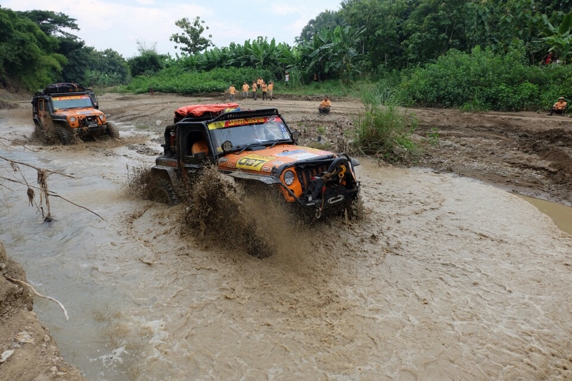
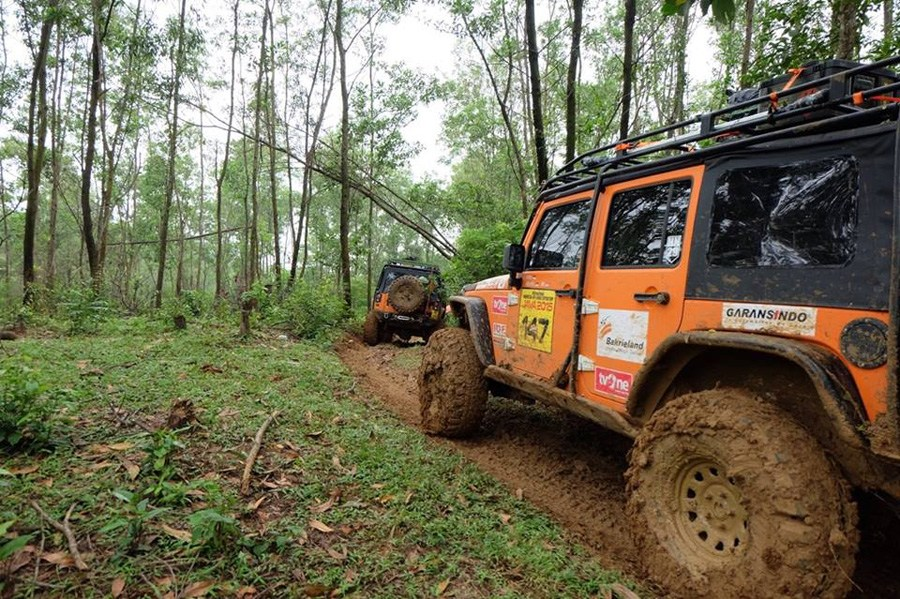
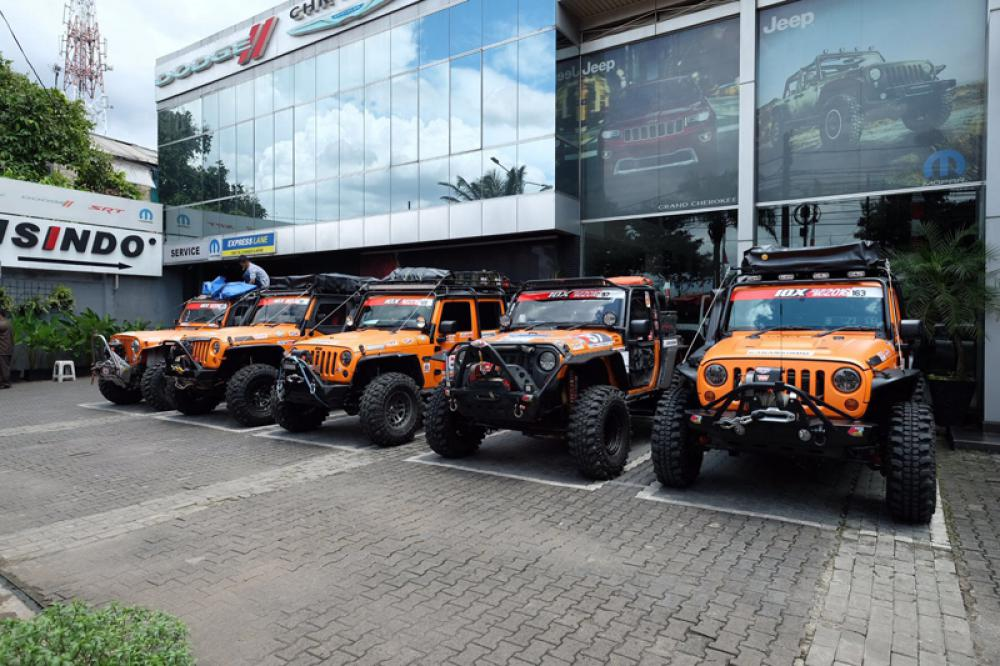
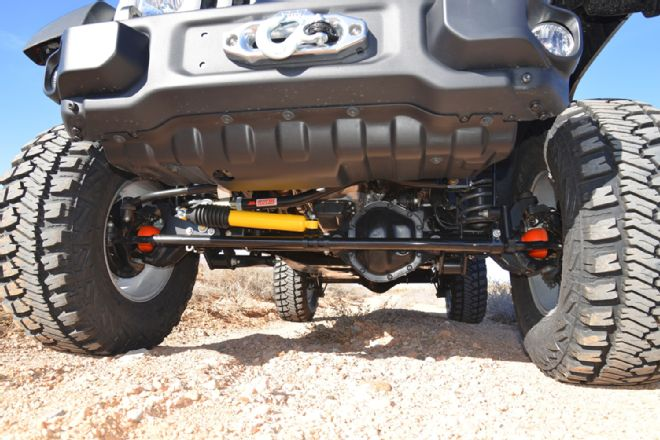
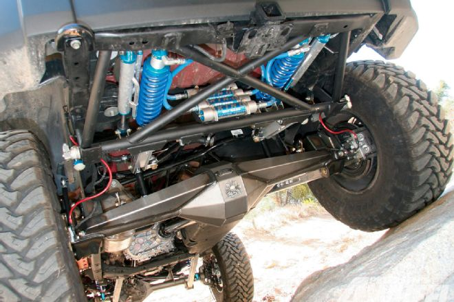

Wrangler Rubicon
Dunia offroad tak lepas dari mobil buatan Jeep. Bahkan mobil asal Amerika Serikat ini, menjadi salah satu mobil legenda yang sudah puluhan tahun mengaspal di Indonesia.
Bagi pecinta mobil classic yang diperuntungkan untuk kegitan offroad, maka mobil Jeep bisa menjadi salah satu pilihan paling tepat. Namun saat ini, sudah ada beberapa tipe mobil Jeep terbaru yang dipasarkan di Indonesia,
dan semuanya membawa teknologi lebih canggih dan pembaharuan mesin lebih bertenaga.
Salah satu mobil Jeep terbaik saat ini adalah tipe Wrangler Rubicon. Mobil ini menawarkan mesin 3.0L V6 Pentastar yang mampu menghasilkan tenaga sangat besar,
yakni mencapai 230 Hp dan torsi 285 Nm. Berbekal inilah, Wrangler Rubicon siap dipakai disegala medan jalan, dan pastinya akan mampu melewati jalanan berlumpur, bebatuan, ataupun jalanan berpasir dengan sangat lancar.
Terlebih didalamnya sudah ada berbagai fitur canggih yang mengoptimalkan performa mesin yang ada di balik kabinnya.

Jeep Wrangler bisa dikatakan sebagai SUV 4X4 terbaik saat ini. Sayangnya sobat otomotif harus rela mengeluarkan uang melebihi 800 Juta Rupiah untuk membelinya.
Dibalik mahalnya harga Jeep Wrangler Rubicon, mobil ini siap menjadi kendaraan pribadi yang cocok sobat otomotif pakai melewati segala medan jalan.
Nah untuk melihat lebih detail kehebatan mobil offroad ini, silahkan sobat otomotif menyimak informasi berikut:
Desain Dan Dimensi Jeep Wrangler Rubicon dipasarkan dalam 2 opsi pilihan pintu, yaitu 2 pintu dan 4 inti. Kedua varian ini sama-sama memiliki desain gahar dan menujukan dirinya sebagai sebuah mobil yang mampu melewati semua medan jalan.
Menariknya, ukuran kedua tipe ini berbeda, karena untuk versi 2 pintu memiliki ukuran panjang 4223 mm, lebar 1873 mm, dan ketinggian 1825 mm. Sedangkan Jeep Wrangler Rubicon 4 pinti memiliki dimensi panjang 4751 mm, lebar 1877 mm, dan ketingian 1865 mm.
Walaupun ukuran keduanya berbeda, namun mobil ini sama-sama memiliki groud clerance yang tinggi, sehingga mudah melewati jalanan berlumpur ataupun jalanan aspal.
Kemudian untuk bagian interiornya, Jeep menyediakan interior mewah dan memiliki sentuhan teknologi canggih yang dilengkapi system audio Uconnect 130 dan Uconnect 430 yang bisa sobat otomotif pilih sesuai tipe Jeep Wrangler Rubicon yang sobat beli.
Menariknya untuk Uconnet 430 sudah didukung layar touchscreen berukuran 6.5 inci yang mendukung berbagai konten hiburan.

Dapur Pacu Mesin 3.0L Pentastar® V6 engine siap mengoptimalkan kinerja Jeep Wrangler Rubicon dalam menghasilkan performa bertenaga dengan keluaran maksimal mencapai 230 horsepower.
Mesin tersebut secara optimal, mampu menghasilkan torsi mencapai 284 Nm, sehingga mobil ini mampu melawati segala jenis medan dengan sangat mudah.
Kemudian untuk sistem transmisinya, Jeep Wrangler Rubicon memakai sistem transmisi automatic dengan 5 tingkat percepatan.
Selain itu, Jeep juga menyediakan sistem penggerak roda 4×4 (4WD) yang memaksimalkan kinerja mobil ini saat melewati terjalnya medan jalan.
Agar kenerja Jeep Rubicon lebih stabil ketika melawati jalan berbatuan, mobil ini telah dilengkapi fitur Rock-Trac yang akan memberikan kontrol lebih nyaman serta peningkatan torsi ketika dipakai pada rasio gear rendah.
Selain itu, tersedia pula fitur Hill Descent Control, yang akan membantu pengendara Jeep Rubicon untuk mengatur throttle, kecepatan, dan pengereman ketika megendarai mobil ini pada jalanan menurun.
Kemudian ada pula teknologi Hill Start Assist yang berguna untuk membantu daya pengereman ketika melewati jalan tanjakan.

Suspensi Dan Kaki-kaki Sebanding dengan harga Jeep Wrangler Rubicon yang mahal, mobil ini memiliki suspensi sangat baik, karena di peruntungkan untuk melewati semua medan jalan. Mobil ini telah dilengkai suspensi yang didesain secara khsusus untuk kendaraan offroad.
Tak hanya itu saja, Wrangler Rubicon juga menawarkan roda depan dan belakang juga dilengkapi teknologi Tru Lok, yang akan berfungsi untuk membantu penguncian roda agar memiliki traksi lebih baik.
Kemudian untuk bagian kaki-kaki sudah ada velg berukuran 17-inch x 7.5-inch yang dipoles dengan material khusus berwarna abu-abu.
Mobil offroad premium ini menawarkan kenyamanan berkendara di segala medan. Nah untuk mengimbangi kenyamanannya,
Jeep Wrangler Rubicon telah dilengkapi empat buah piringan cakram dan sistem pengereman ABS (Antilock Brake System) yang berguna untuk meningkatkan kontrol kendaraan saat mengerem mendadak di jalanan ekstrim.


Fitur Untuk menigkatkan keselamatan pengendaranya, mobil ini telah dilengkapi fitur airbag canggih yang memiliki teknologi multistage, sehingga memberikan perlindungan sempurna dengan keluaran airbag sesuai dengan tekanan benturan. Selain itu,
tersedia pula airbag pada bagian samping yang ditambah deteksi sensor, sehingga meningkatkan keselamatan pengendaranya apabila tejadi kecelakaan.
Tak hanya itu saja, sebanding dengan harga Jeep Wrangler Rubicon, mobil ini juga memiliki kontruksi body-on-frame yang dijamin sangat kuat.
Seperti yang kami sampaikan diatas, Jeep Rubion juga dilengkapi fitur Hill Start Assist dan fitur Elektronic Stability Control. Kemudian untuk sistem keamanannya,
sudah ada fitur Remote Keyless Entry yang memungkinkan pengucian kendaaran dari jarak 50 kaki.
Lalu ada pula teknologi Sentry Key® antitheft engine immobilizer yang menjadikan keamanan mobil ini semakin maksimal,
karena hampir tidak mungkin ada orang yang bisa menjalankan mobil ini tanpa adanya kunci yang valid.